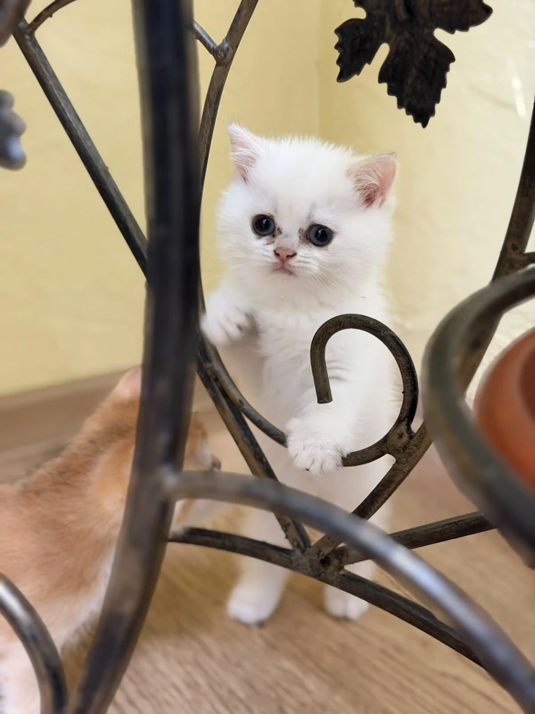

КОШЕНЯ · № 01
Маленьке диво
Ім’я, стать і вік уточнюються
Знайомтеся з нашими котиками. Подивіться справжні фотографії малечі та її родини й оберіть, про кого хочете дізнатися більше.
Познайомитися з кошеням ↗
Маленький герой нашої історії ♡У кожного — свій погляд і характер.
Почніть знайомство з фотографії.
Ім’я, стать і вік уточнюються
Трохи ближче до тих,
хто подарував малечі життя.
Погляньте, як малеча досліджує світ. Справжній домашній момент — у короткому відео від власниці.
Дізнатися про кошенят ↗Уточніть, хто з кошенят на відео зараз доступний.Спокійно, уважно й з відповідями
на важливі для вас запитання.
Перегляньте фотографії та відкрийте сторінку того, хто вам сподобався.
Уточніть наявність, вік, характер, ціну, документи та ветеринарну інформацію.
Умови бронювання, оплати й передачі кошеняти погоджуються безпосередньо з власницею.
Підтверджені ціни ще не додані. У запиті можна зазначити, чи шукаєте ви домашнього улюбленця або кошеня для розведення.
Інформацію про документи, щеплення та обстеження для кожного котика має підтвердити власниця. На цій початковій версії сайту ці дані ще не опубліковані.
Місто, можливість доставки та спосіб передачі кошеняти уточнюються. Ці умови потрібно погодити до бронювання.
Підготуйте повідомлення для власниці.
Будемо раді знайомству.